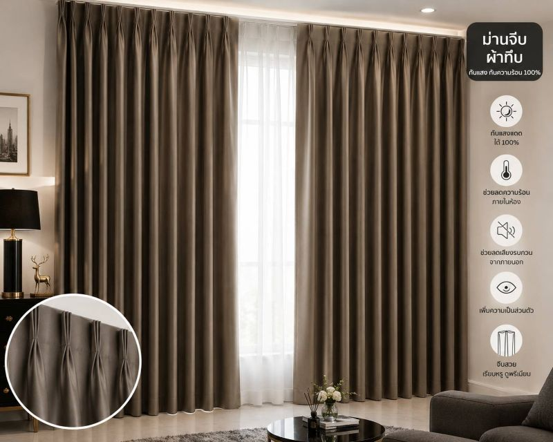
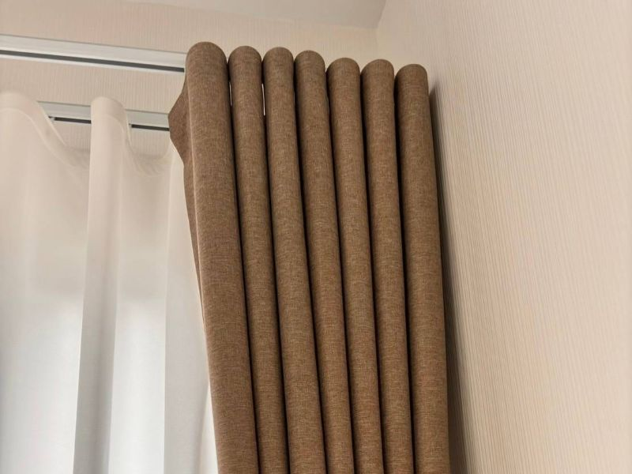
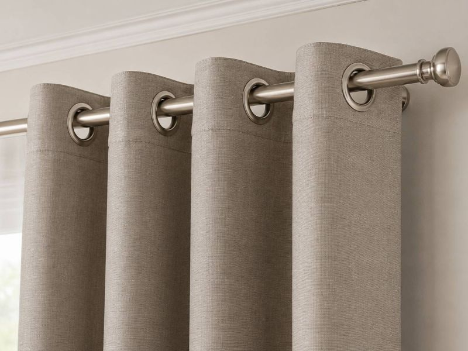
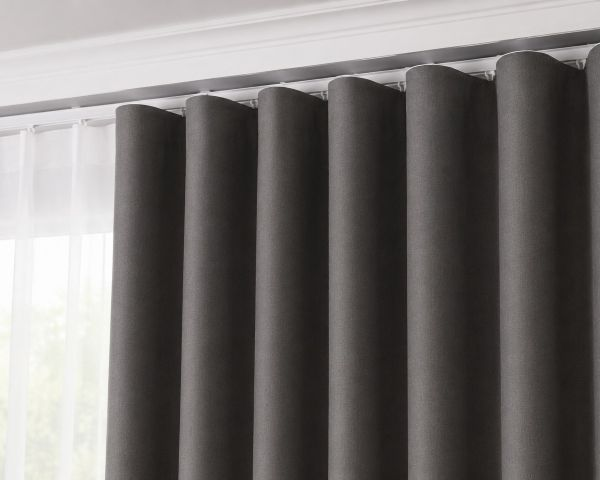
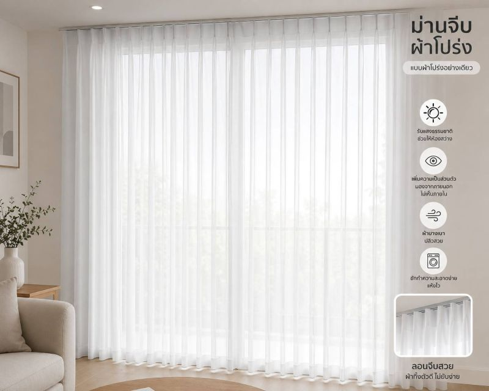

บริการผ้าม่าน กรุงเทพฯ และปริมณฑล
MID Design Studio ให้บริการผ้าม่าน วอลเปเปอร์ มู่ลี่ และพื้น นำโดยทีมงานที่มีประสบการณ์ในธุรกิจนี้มากว่า 20 ปี ดูแลลูกค้าทั้งบ้าน คอนโด ร้านค้า และสำนักงาน ทั่วกรุงเทพฯ และทั่วประเทศ
เรามีบริการออกแบบ ผลิต และติดตั้งผ้าม่านตามขนาดจริง โดยมีรูปแบบให้เลือกหลากหลาย ดังนี้
ม่านจีบ (Pleated Curtains)
รูปแบบผ้าม่านยอดนิยมที่ให้ความเรียบร้อย สวยงาม และดูหรูหรา เหมาะกับการตกแต่งทุกสไตล์ สามารถเลือกใช้ได้ทั้งผ้าทึบแสงและผ้าโปร่ง
{kind=link}

ม่านลอนเทป (Wave Curtains)
ผ้าม่านสไตล์โมเดิร์นที่กำลังได้รับความนิยม ด้วยลอนผ้าที่โค้งสม่ำเสมอสวยงาม ดูเรียบหรู ทันสมัย เหมาะกับบ้านและคอนโดสไตล์ร่วมสมัย
{kind=link}

ม่านตาไก่ (Eyelet Curtains)
โดดเด่นด้วยห่วงตาไก่ที่ติดกับตัวผ้าม่าน ทำให้เปิด-ปิดสะดวก ลอนผ้าดูเป็นธรรมชาติ เหมาะสำหรับผู้ที่ต้องการความเรียบง่ายแต่มีสไตล์
{kind=link}

ผ้าทึบแสง (Blackout Curtains)
ช่วยลดแสงจากภายนอก เพิ่มความเป็นส่วนตัว และช่วยลดความร้อน เหมาะสำหรับห้องนอน ห้องประชุม และพื้นที่ที่ต้องการควบคุมแสงเป็นพิเศษ
{kind=link}

ผ้าโปร่ง (Sheer Curtains)
ช่วยกรองแสงธรรมชาติให้ดูนุ่มนวล สร้างบรรยากาศโปร่งสบาย และยังคงความเป็นส่วนตัว เหมาะสำหรับใช้งานร่วมกับผ้าทึบแสงเพื่อเพิ่มมิติให้กับการตกแต่ง
{kind=link}

ม่านรางโรงพยาบาล
ออกแบบสำหรับโรงพยาบาล คลินิก สถานพยาบาล และศูนย์ดูแลผู้สูงอายุ ช่วยแบ่งพื้นที่ใช้งานและเพิ่มความเป็นส่วนตัวแก่ผู้ใช้งาน มีความแข็งแรง ทนทาน และสามารถเลือกผ้าที่เหมาะสมกับการใช้งานเฉพาะทางได้
ด้วยประสบการณ์ด้านงานผ้าม่านและตกแต่งภายใน เราพร้อมให้คำปรึกษา วัดหน้างาน ออกแบบ และติดตั้งโดยทีมงานมืออาชีพ เพื่อให้ได้ผลงานที่สวยงามและตอบโจทย์การใช้งานมากที่สุด
MID Design Studio
อยากรู้จัก MID Design Studio มากขึ้น?